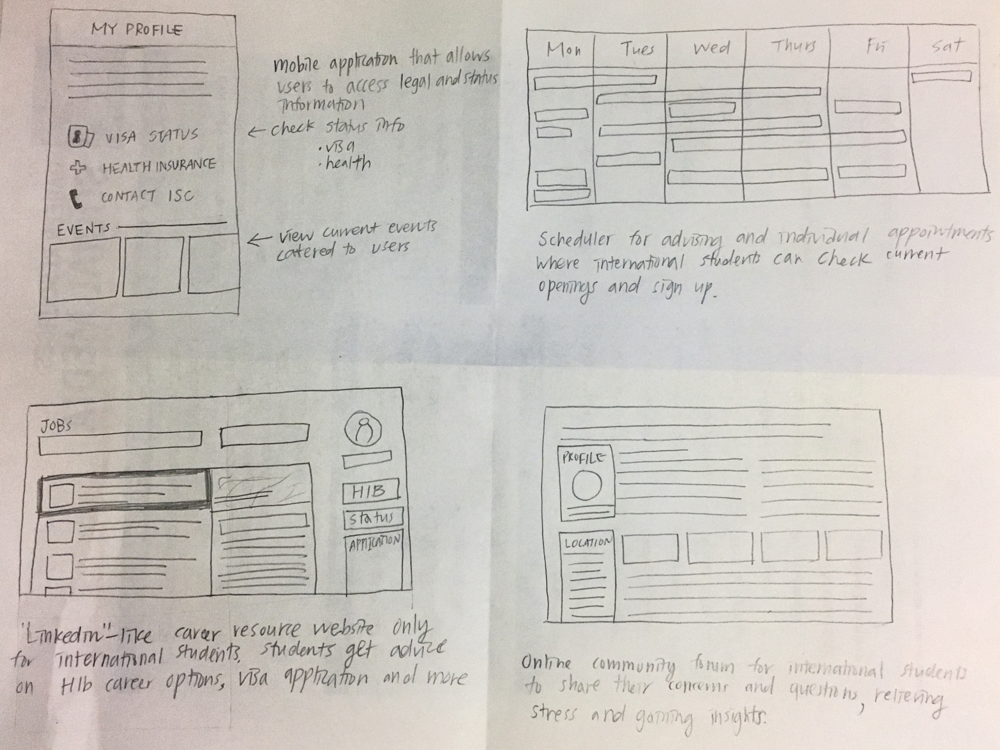
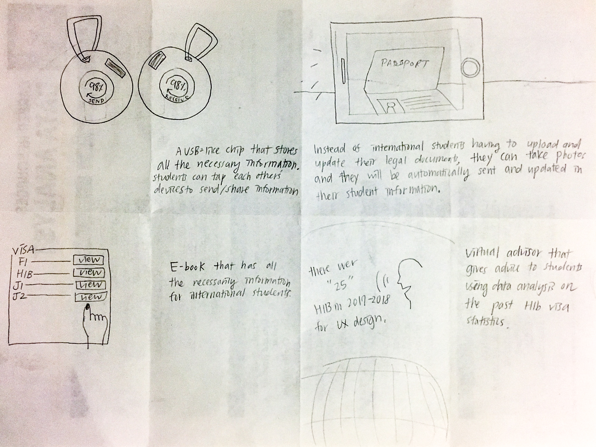
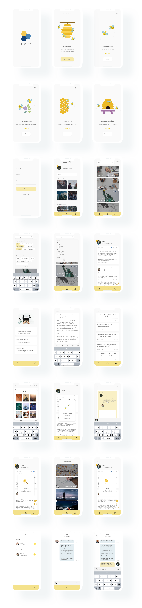

Blue Hive
Career and Visa Q&A mobile app for UMich international student
Check My Final DesignCourse
SI 582: Introduction to Interaction Design (Individual Project)Tools
Sketch Balsamiq Adobe XD Adobe Illustrator Adobe PhotoshopSkills
User Research Analysis Ideation Sketching Prototyping PresentationDuration
Fall 2018Overview
 At the University of Michigan, international students can access various resources through the International Center. With less than 10 international advisors employed for more than 7,000 international students, the current advising system is very time-consuming. Currently, there aren’t any mobile platforms available for all University of Michigan international students to share their concerns and questions. I designed a mobile app that focuses on the career struggles that international students face, connecting all international students to come together and thrive in a collaborative environment.
At the University of Michigan, international students can access various resources through the International Center. With less than 10 international advisors employed for more than 7,000 international students, the current advising system is very time-consuming. Currently, there aren’t any mobile platforms available for all University of Michigan international students to share their concerns and questions. I designed a mobile app that focuses on the career struggles that international students face, connecting all international students to come together and thrive in a collaborative environment.
The Challenge
Working in the United States a never-ending question mark for international students. Starting from visa status to career options, international students face many problems that American students might not have even considered before. Different from domestic students in the U.S., international students need to get sponsorships from the employer upon graduation in order to work and stay legal in the United States. A lot of students waste their time and energy only to find out that they cannot legally receive sponsorships from the companies they applied for. "Not only do international students have a hard time searching for jobs in the U.S, they need to consider legal status, visa processing, and sponsorships." One of the main reason is that staffs and advisors at the International Center can't fully understand these struggles and are unable to sympathize with students. Also, it is hard for staffs to help students in answering specific questions as a lot of those questions depend on each students' personal experience and visa status.Design Process
I based my design on participatory design by putting “international students” in the center of this project and involving users throughout the process. As an international student myself, I tried not to assume or make decision based on my personal experiences.Competitive Analysis
To see if there are currently existing solutions available in the market, I conducted a competitive analysis. While there weren't exactly the same services that are specifically catered to international students, I found five similar solutions that provide similar features and analyzed the strengths and deficiencies of each services. Out of five, one is a Q&A mobile app, three are mobile app for private international student education entities and one is an University-affiliated mobile app.


User Research
I conducted a survey with 46 undergraduate and graduate international students at the University of Michigan and interviewed 5 of them. "lt's hard to find jobs that will actually sponsor me." The magnitude of the issue could be further glanced in the informal survey I conducted with 46 international students. 83% of respondents said that "Career and H1B Sponsorship" is the hardest parts about being an international student in the United States (n = 38), and about 61% of respondents (n = 28) wished there was a platform they could connect to each other about "Work Authorization." "I've met with advisors for career advices. They were NOT helpful." Through interviews, I found out that many international students were not satisfied with the current career advising provided by the University of Michigan. Three out of five interviewees stated that they have not found the career advising session helpful, as the advisors couldn't fully understand what they were going through.Brainstorming & Ideation
I came up with 8 possible design solutions to solve various challenges international students are going through and created storyboard for each of the solutions.- 1. Visa Status & Legal Mobile App
- 2. Real-time advising scheduler
- 3. Linkedin for International Students
- 4. Online community forum
- 5. Data stored device
- 6. AR app
- 7. E-book
- 8. Virtual advisor
8 ideation sketches
 Storyboarding
To understand the goal and possible user behavior through my solutions, I sketched a short five-cut storyboard for each solution. The storyboards helped me to go through the flow from encountering the problem to using the solutions to solve the users problem.
 I showed my storyboards to three international students and received feedback on these storyboards. Combined with user research result and feedback from students, I decided to focus on career concerns for international students by combining "Online Community forum" and "Career Information platform."
I showed my storyboards to three international students and received feedback on these storyboards. Combined with user research result and feedback from students, I decided to focus on career concerns for international students by combining "Online Community forum" and "Career Information platform."
- 1. 360-AR Skype for international students
- 2. Online community forum
- 3. AR Camera app
- 4. Career Information platform
- 5. Visa status mobile app
- 6. Friends matching mobile app
- 7. Real-time advising scheduler
- 8. Virtual advisor
Persona
I created three personas to clearly understand the needs and goals of my primary target users. Also, I made one anti-persona to define who would not use this service.


Design Rationale & QOC Analysis
In order to defend my design rationales, I conducted a QOC analysis and looked at possible design options for this mobile platform.- 1. Q&A Board with Keyword Search
- 2. User Timeline
- 3. Anonymous Stories
User Flow & Wire Framing
After analyzing the main user tasks, I created a user flow diagram with low-fi wireframes. Paper Prototyping
I designed low fidelity prototype and made a paper prototype video for 12 tasks users would go through using Blue Hive.- 1. Create Account & Log in
- 2. User searches for content
- 3. User likes a post
- 4. User bookmark a post
- 5. User posts a question
- 6. User writes a response
- 7. User posts a blog
- 8. User checks notification on profile
- 9. User writes a comment
- 10. User checks messages
- 11. User deletes notification
- 12. User checks bookmarks
Final Design
After receiving feedback from international students and classmates, I designed the final screens for Blue Hive on Adobe XD and Sketch. BlueHive's branding signifies how this mobile platform is a collaborative environment for all students as well as represents the colors of the University of Michigan. Also, I tried to portray a bright and inviting vibe to users by incorporating bee illustrations and yellow color theme 